Объёмные тела.
В этом разделе приводятся базовые примитивы CSG геометрии.
Параллелепипед.
Объёмное тело - параллелипипед. Задаётся с указанием трёх размеров x, y, z. При указании одного размера a генерируется куб (a,a,a). Установка булевой опции center совмещает геометрический центр тела с началом координат.
Сигнатуры:
box(x, y, z, center=True/False)
box(size=(x,y,z), center=True/False)
box(size=a, center=True/False)
Примеры:
box(10, 20, 30, center=False)
box(size=(10,20,30), center=False) # alternate
box(10, center=True)
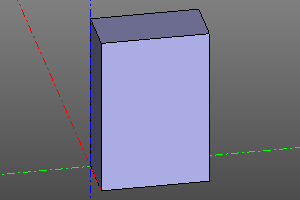 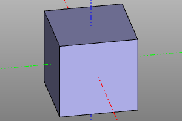
Сфера.
Объёмное тело - сфера. Задаётся с указанием радиуса. Возможно построение сектора сферы с использованием необязательных параметров yaw, pitch.
Сигнатура:
sphere(r=radius, yaw=yaw, pitch=(minPitch, maxPitch))
Примеры:
sphere(10)
sphere(10, yaw=math.pi*2/3)
sphere(10, pitch=(deg(20), deg(60)))
sphere(10, yaw=deg(120), pitch=(deg(20), deg(60)))
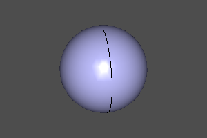
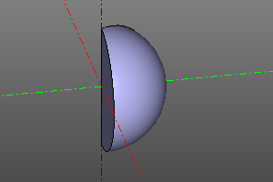
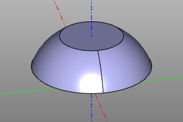
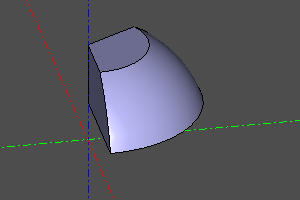
Цилиндр.
Объёмное тело - цилиндр. Задаётся с указанием радиуса и высоты. Возможно построение сектора цилиндра с использованием необязательного параметра yaw. Установка опции center совмещает геометрический центр тела с началом координат.
Сигнатура:
cylinder(r=radius, h=height, yaw=yaw, center=True/False)
cylinder(r=10, h=20)
cylinder(r=10, h=20, yaw=deg(45))
cylinder(r=10, h=20, center=True)
cylinder(r=10, h=20, yaw=deg(45), center=True)
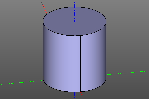
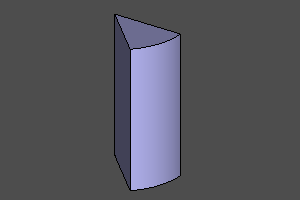
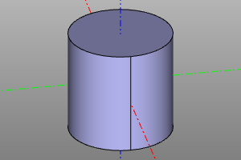
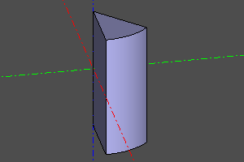
Конус.
Объёмное тело - конус. Задаётся с указанием нижнего радиуса r1, верхнего радиуса r2 и высоты. Возможно построение сектора конуса с использованием необязательного параметра yaw. Установка опции center совмещает геометрический центр тела с началом координат. Радиусы r1 и r2 могут равняться нулю, что соответствует остроконечному конусу.
Сигнатура:
cone(r1=botRadius, r2=topRadius, h=height, yaw=yaw, center=True/False)
Примеры:
cone(r1=20, r2=10, h=20)
cone(r1=20, r2=10, h=20, yaw=deg(45))
cone(r1=0, r2=20, h=20)
cone(r1=20, r2=0, h=20, center=True)
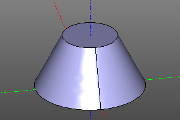
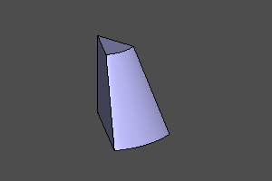
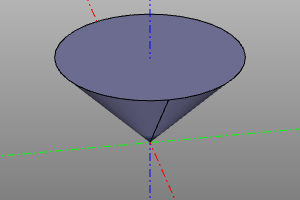
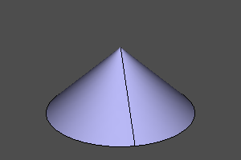
Тор.
Объёмное тело - тор. Задаётся с указанием центрального радиуса r1 и локального радиуса r2. Возможно построение секторов тора с использованием необязательных параметров yaw, pitch.
В случае, если интервал угла pitch не содержит внутренней области, в центре образуется соответствующая цилиндрическая вставка. Если интервал угла pitch не содержит внешней области, соответствующая часть тора ограничивается плоскостью.
Сигнатура:
torus(r1=centralRadius, r2=localRadius, yaw=yaw, pitch=(minPitch, maxPitch))
Примеры:
torus(r1=20, r2=5)
torus(r1=20, r2=5, yaw=deg(120))
torus(r1=20, r2=5, pitch=(deg(-20), deg(120)))
torus(r1=20, r2=5, pitch=(deg(-20), deg(120)), yaw=deg(120))
torus(r1=20, r2=5, pitch=(deg(-140), deg(140)), yaw=deg(120))
torus(r1=20, r2=5, pitch=(deg(-20), deg(190)), yaw=deg(120))
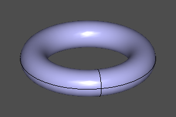
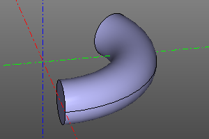
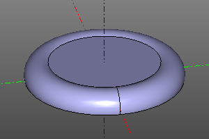
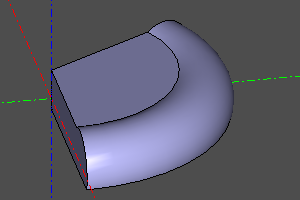
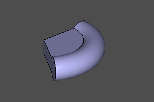
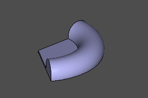
Полупространство.
Специальное объёмное тело, представляющее собой нижнее полупространство. Так же как и остальные объёмные тела, поддерживает трансформации и с использованием их может представлять любое возможное полупространство. В отличии от обычных тел не может быть отображено непосредственно. Используется вместе с операциями разности и пересечения.
sphere(r=10) - halfspace().rotateX(deg(150))
sphere(r=10) ^ halfspace().rotateX(deg(150))
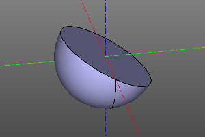 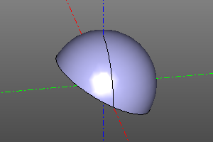